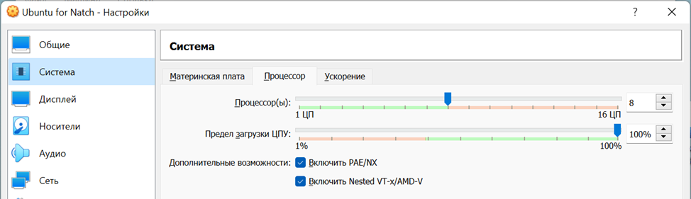
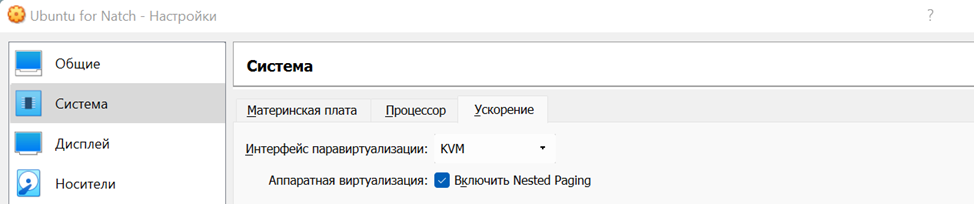
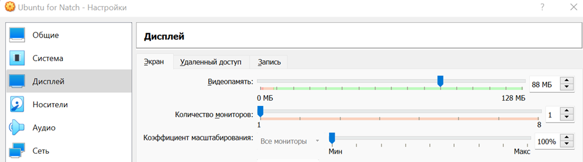
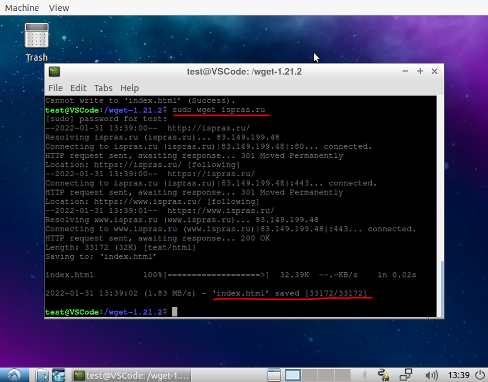

4. Настройка окружения для работы с Natch
Работа с Natch предполагает подготовку образа операционной системы для QEMU.
В этом разделе описаны все подготовительные действия, которые могут потребоваться перед работой непосредственно с инструментом.
4.1. Подготовка виртуализованной среды в формате QEMU
Подготовка виртуализованной среды выполнения объекта оценки (ОО) в общем случае состоит из следующих последовательных шагов:
создание образа эмулируемой операционной системы в формате диска qcow2 на основе базового дистрибутива ОС. Формат qcow2 позволяет эффективно формировать снапшоты состояния файловой системы в произвольный момент выполнения виртулизованной среды функционирования;
сборка дистрибутива ОО с требуемыми параметрами, в частности, с генерацией и сохранением отладочных символов;
помещение собранного дистрибутива ОО в виртуализованную среду выполнения;
подготовка команд запуска QEMU, для эмуляции аппаратной части среды функционирования, загрузку и выполнение компонентов Natch.
Подготовка виртуализованной среды выполнения ОО в значительной степени совпадает с подготовкой среды для анализа с помощью инструмента динамического анализа помеченных данных Блесна (разработчик - ИСП РАН), с точностью до подготовки команд запуска QEMU.
Создавать виртуализованную среду выполнения ОО рекомендуется в хостовой системе, допускающей запуск QEMU в режиме пользовательской виртуализации (ключ -enable-kvm) - это существенно ускорит процесс,
скорость работы в режиме аппаратной виртуализации более чем на порядок превосходит работу в режиме полносистемной эмуляции. Проверить доступность данного режима в вашей хостовой системе
(равно как и установить KVM-модули в вашу систему) можно, опираясь на следующую статью, с помощью команды:
sudo kvm-ok
Примерный алгоритм проброса виртуализации для трехуровневого стенда: Windows 11+AMD Процессор (хостовая ОС рабочей станции) -> VirtualBox (хостовая ОС рабочей станции) -> ubuntu+kvm+qemu (хостовая ОС Natch) -> lubuntu (гостевая ОС) приведён ниже.
Перед установкой KVM в гостевой ОС нужно настроить среду виртуализации VirtualBox в хостовой ОС как на рисунках ниже.
ВНИМАНИЕ!
На момент 12.10.2025 по-прежнему наблюдается проблема с тем, что VirtualBox версии 7+ (7.0.8) не позволяет корректно запускать QEMU в режиме поддержки KVM. Используйте VirtualBox версии 6.1.40 (именно эту). Наиболее актуальный тикет на данную ошибку заведён здесь, пока что без ответа.



Перед установкой KVM необходимо определить, поддерживает ли процессор эту функцию:
egrep -c '(vmx|svm)' /proc/cpuinfo
В результате будут следующие варианты ответа системы:
0 – процессор не поддерживает функции KVM;
1 и более – процессор поддерживает функции KVM.
Следующий этап – установка KVM:
sudo apt install qemu qemu-kvm libvirt-daemon libvirt-clients bridge-utils virt-manager
Этой командой будет выполнена установка утилиты kvm, библиотеки libvirt и менеджера виртуальных машин.
Далее необходимо добавить своего пользователя в группу libvirt, так как только root и пользователи этой группы могут использовать виртуальные машины KVM:
sudo gpasswd -a $USER libvirt
Затем необходимо убедиться, что сервис libvirt запущен и работает:
sudo systemctl status libvirtd
После выполнения этой команды выполнить: reboot
Далее, проверка установки kvm: kvm-ok
Если вы получили ответ:
INFO: dev/kvm exists
KVM acceleration can be used
Значит настройка выполнена правильно, и вы молодец :) Ваша QEMU-виртуализированная гостевая ОС будет работать быстро, что позволит быстро сформировать в ней исследуемую среду.
При этом важно помнить, что анализ в любом случае необходимо выполнять без использования данного ключа, так как только полносистемная эмуляция позволяет собрать полный лог действий процессора.
4.1.1. Подготовка хостовой системы
Требования к хостовой системе приведены в разделе Требования и ограничения Natch.
Подготовим Linux-based рабочую станцию (далее - хост), поддерживающую графический режим выполнения. QEMU демонстрирует вывод эмулируемой среды выполнения в отдельном графическом окне, следовательно, нам необходим графический режим. Хост может быть реализован в формате виртуальной машины. В примерах ниже описаны действия пользователя, работающего в виртуальной машине VirtualBox (4 ядра, 8 ГБ ОЗУ) с установленной ОС Ubuntu20.04 (desktop-конфигурация, обновить пакеты при установке).
Установим требуемое системное ПО, в т.ч. QEMU:
sudo apt install -y curl qemu-system gcc g++
Подсказка: данная инсталляция требуется не для запуска Natch, но для создания образов ВМ на произвольном хосте. Natch содержит в своём составе требуемую для работы версию QEMU, поэтому если вы планируете создавать образ ВМ на том же хосте, на котором уже установили Natch, отдельно QEMU можно не ставить.
Скачаем на хост выбранный базовый дистрибутив ОС. Лучше использовать минимальный образ – уменьшение числа установленных служб, стартующих при запуске, сокращает нагрузку на процессор и ускоряет анализ объекта оценки в режиме полносистемной эмуляции. В нашем примере используется легковесный образ Ubuntu - lubuntu. Создадим каталог на хосте и скачаем туда дистрибутив:
cd ~ && mkdir natch_quickstart && cd natch_quickstart
curl -o lubuntu-18.04-alternate-amd64.iso 'http://cdimage.ubuntu.com/lubuntu/releases/18.04/release/lubuntu-18.04-alternate-amd64.iso'
Проверим, работает ли эмулятор:
qemu-system-x86_64 --version
QEMU emulator version 4.2.1 (Debian 1:4.2-3ubuntu6.19)
Copyright (c) 2003-2019 Fabrice Bellard and the QEMU Project developers
Для установки гостевой ОС создадим образ жесткого диска в формате qcow2, с именем lubuntu.qcow2 и размером 20 ГБайт.
qemu-img create -f qcow2 lubuntu.qcow2 20G
Formatting 'lubuntu.qcow2', fmt=qcow2 size=21474836480 cluster_size=65536 lazy_refcounts=off refcount_bits=16
ll
total 8100768
drwxrwxr-x 4 user user 4096 янв 30 20:40 ./
drwxr-xr-x 25 user user 4096 янв 30 20:40 ../
-rw-rw-r-- 1 user user 751828992 янв 30 20:34 lubuntu-18.04-alternate-amd64.iso
-rw-r--r-- 1 user user 196928 янв 30 20:08 lubuntu.qcow2
Создадим скрипт запуска нашей ВМ run.sh. Мы сохраняем его в виде отдельного файла, потому что позже скрипт потребуется редактировать. Для тех, кто сталкивается с синтаксисом QEMU впервые, рекомендуется ознакомиться с основными командами, описанными в официальной документации QEMU. Важным для ускорения работы виртуализированной среды QEMU, за счет аппаратной виртуализации, является установка ключей -enable-kvm и -cpu host,nx.
qemu-system-x86_64 \
-hda lubuntu.qcow2 \
-m 4G \
-enable-kvm \
-cpu host,nx \
-monitor stdio \
-netdev user,id=net0 \
-device e1000,netdev=net0 \
-cdrom lubuntu-18.04-alternate-amd64.iso
Запустим скрипт:
./run.sh
после чего увидим графическое окно установки lubuntu. lubuntu желательно устанавливать с минимальным набором параметров для ускорения установки и уменьшения «шума» избыточных процессов и сетевых служб во время анализа.
Подсказка: чтобы вывести курсор мыши из открытого графического окна ВМ QEMU нажмите Ctrl+Alt+G
После завершения установки удалим из скрипта запуска run.sh указание подключения cdrom – для дальнейшей работы он нам не потребуется
#-cdrom lubuntu-18.04.3-desktop-amd64.iso
Наш образ среды функционирования готов к работе, в частности, к установке в него пресобранного с символами прототипа объекта оценки.
4.1.2. Сборка прототипа объекта оценки
Рекомендации по подготовке исполняемого кода приведены в разделе Рекомендации по подготовке и анализу объекта оценки.
В общем случае к анализируемому исполняемому коду выставляется два требования:
должна быть представлена отладочная информация в формате символов в составе исполняемых файлов, отдельно прилагаемых символов или map-файлов. Предоставление символов непосредственно в составе исполняемых файлов является основной и рекомендуемой стратегией. Natch умеет самостоятельно доставать информацию об отладочных символах из исполняемых файлов, собранных как минимум компиляторами gcc и clang с сохранением отладочной информации (ключ компилятора
-g, также рекомендуется сборка без оптимизаций в режиме-O0). Для стандартных пакетов из наиболее популярных сборок операционных систем символы подгружаются автоматически;рекомендуется выполнять сборку подлежащего анализу исполняемого кода в виртуализированной среде (виртульная машина QEMU). В случае, если сборка и анализ будут выполняться в различных средах функционирования (например, сборка происходит на отдельном сборочном сервере), требуется обеспечить совместимость версий разделяемых динамических библиотек, в первую очередь glibc, из состава среды функционирования. На вашем хосте и в виртуализированной среде комплекты библиотек могут различаться.
В качестве прототипа объекта оценки рассмотрим популярную программу wget.
Для выполнения классического подготовительного скрипта configure, входящего в комплект поставки wget, генерирующего make-файл, потребуется установить дополнительные зависимости (скрипт выведет их наименования в случае неудачного завершения), например:
sudo apt install -y gnutls-dev gnutls-bin curl make gcc g++
Подсказка: поскольку мы собираем wget из исходников, потребуется комплект заголовочных файлов, доступный как раз в dev-версии пакета gnutls
Скачаем исходные тексты wget из репозитория в среду функционирования:
curl -o wget-1.21.2.tar.gz 'https://ftp.gnu.org/gnu/wget/wget-1.21.2.tar.gz'
tar -xzf wget-1.21.2.tar.gz && cd wget-1.21.2
Скрипт configure запустим с ключами, устанавливающими параметры компилятора для сохранения информации об отладочных символах. После этого запустим make для сборки проекта.
CFLAGS='-g -O0' ./configure
make
4.1.3. Перенос прототипа объекта оценки из образа ВМ на хост
Natch использует файлы объекта оценки для получения из них отладочных символов.
Чтобы выгрузить нужные файлы из виртуальной машины, можно использовать команду natch modules extract
(подробнее в разделе Командный интерфейс Natch):
mkdir wget-1.21.2
natch modules extract -i lubuntu.qcow2 -p /home/user/wget-1.21.2 -D wget-1.21.2 -e
С версии Natch 3.2 файлы объекта оценки могут быть извлечены автоматически на этапе конфигурирования проекта.
4.1.4. Тестирование виртуализированной среды функционирования ОО
Запускаем ВМ скриптом run.sh с отключенным ранее cdrom, дожидаемся загрузки ОС ВМ, авторизуемся в ОС, пробуем выполнить обращение к произвольному сетевому ресурсу с помощью собранной нами версии wget:
cd wget-1.21.2/src && sudo ./wget ispras.ru
В результате вы должны увидеть приблизительно следующую картину в графическом окне QEMU, свидетельствующую о том, что ОО корректно выполняется в среде функционирования и сетевая доступность для ВМ обеспечена:
